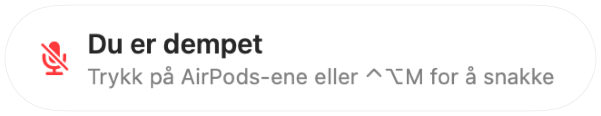

En «Du er dempet»-påminnelse for alle samtaleapper
Zoom varsler deg når du snakker mens du er dempet. De fleste andre apper gjør ikke det, og videomøter i nettleseren gjør det nesten aldri. Du forklarer noe i et minutt, og så oppdager du at alle sitter og venter.
Muffle følger med på tale mens du er dempet og viser en påminnelse, i alle apper. Når samtalen bruker AirPods eller hodetelefoner, lytter den til Mac-ens egen mikrofon, og bare til lydnivået. Ingenting blir tatt opp.
Slå på påminnelsen
- 1
Installer Muffle og gi mikrofontilgang.
- 2
Pass på at «Minn meg på det når jeg snakker mens jeg er dempet» er slått på i Muffle-innstillinger.
- 3
Bli med i en samtale med AirPods eller hodetelefoner, og demp.
- 4
Begynn å snakke. En «Du er dempet»-påminnelse dukker opp.

- Går du inn i en samtale mens du fortsatt er dempet fra forrige møte? Muffle minner deg på det når samtalen starter.
- Tasting på tastaturet utløser ikke påminnelsen. Bare tydelig tale gjør det.
Spørsmål og svar
Fungerer påminnelsen med den innebygde mikrofonen på Mac-en?
Den fungerer når samtalen bruker AirPods eller hodetelefoner. Hvis samtalen bruker Mac-ens egen mikrofon, er den mikrofonen dempet og kan ikke høre deg.
Blir lyden min tatt opp?
Nei. Muffle måler bare lydnivået og lagrer eller sender aldri noe lyd.